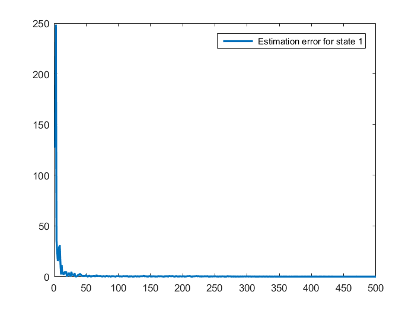

SIMULATION FOR PAPER PRESENTATION
Contents
Title of the Paper: Full-order Observers Design for Nonlinear Systems with Unknown Input
clear ;close;
global A B C D N L M G;
A=[-1 -1 0;-1 0 0; 0 -1 -1];
B=0;
D=[-1; 0;1];
C=[1 0 0;0 1 1];
CD_plus = inv((C*D)'*(C*D))*(C*D)';
U=-D*CD_plus;
V=eye(2) - C*D*CD_plus;
I=eye(3);
IplusUC=I+U*C;
IplusUCA=IplusUC*A;
VCA=V*C*A;
gamma=0.6;
LMI
setlmis([]); P=lmivar(1,[3,1]); Ybar=lmivar(2,[3,2]); Kbar=lmivar(2,[3,2]); % delcaratio of X lmiterm([1 1 1 1],IplusUCA',1,'s'); %lmiterm([1 1 1 1],1,IplusUCA); %lmiterm([1 1 1 -2],VCA',1); lmiterm([1 1 1 2],1,VCA,'s'); %lmiterm([1 1 1 -3],-C',1); lmiterm([1 1 1 3],-1,C,'s'); lmiterm([1 1 1 0],gamma); % declaration of X12 lmiterm([1 1 2 1],sqrt(gamma),IplusUC); lmiterm([1 1 2 2],sqrt(gamma),V*C); % % declaration of X12' % lmiterm([1 2 1 -1],sqrt(gamma)*IplusUC',1); % lmiterm([1 2 1 -2],sqrt(gamma)*(V*C)',1); % decration of I lmiterm([1 2 2 0],-1); LMISYS = getlmis; [tmin,xfeas,] = feasp(LMISYS); P = dec2mat(LMISYS,xfeas,P); Y_bar = dec2mat(LMISYS,xfeas,Ybar); K_bar = dec2mat(LMISYS,xfeas,Kbar); Y=inv(P)*Y_bar; K=inv(P)*K_bar; E=U +Y*V; M= I + E*C; N=M*A-K*C; G=M*B; L=K*(eye(2)+C*E)-M*A*E;
Solver for LMI feasibility problems L(x) < R(x)
This solver minimizes t subject to L(x) < R(x) + t*I
The best value of t should be negative for feasibility
Iteration : Best value of t so far
* switching to QR
1 0.151703
2 0.151703
3 0.134741
4 0.134741
5 0.130996
6 0.130996
*** new lower bound: 0.096615
Result: best value of t: 0.130996
f-radius saturation: 0.000% of R = 1.00e+09
These LMI constraints were found infeasible
simulation
Ts=1e-2;Ns=500;u=0; % zero input % initial condition x(:,1)=[0 0 0]; y(:,1)=C*x(:,1); randn('seed',0); mean=[0 0]; Q=eye(2); %noise mean and covariance % true state and measurement generation for i=2:Ns [t,xt]=ode45(@(t,x)true_state_dyn(t,x,u),[(i-1)*Ts,(i+1)*Ts],x(:,i-1)); x(:,i)=xt(end,:); y(:,i)=C*x(:,i) + mvnrnd(mean,Q)'; end % estimation z(:,1)=[0.3 0.3 0.3]; xest(:,1)=[0 0 0]; for j=1:Ns t=j*Ts; f=[0.6*xest(1,j)*sin(2*t);0.6*xest(2,j)*cos(2*t); 0]; zdot=N*z(:,j) + L*y(:,j) + M*f; z(:,j+1)=z(:,j) + zdot*Ts; xest(:,j+1) = z(:,j) - E*y(:,j); end
plotting
figure(1) % for state 1 plot(x(1,:),'LineWidth',2);hold on plot(xest(1,:),'LineWidth',2) ; legend('true','estimated'); title('True Vs Estimated states for state 1'); xlabel('sampling instants');ylabel('x1'); hold off figure(4); % state 1 estimation error error plotting plot(abs(x(1,:)-xest(1,1:end-1))./abs(x(1,:)),'LineWidth',2); legend(' Estimation error for state 1');
comment
figure(2) % for state 2 plot(x(2,:));hold on plot(xest(2,:)) ; legend('true','estimated'); title('True Vs Estimated states for state 2'); xlabel('sampling instants');ylabel('x2'); hold off figure(3) % for state 3 plot(x(3,:));hold on plot(xest(3,:)) ; legend('true','estimated'); title('True Vs Estimated states for state 3'); xlabel('sampling instants');ylabel('x3'); hold off
xlabel('sampling instants'); ylabel('estimation error x_1'); figure(5); % state 2 estimation error error plotting plot(abs(x(2,:)-xest(2,1:end-1))./abs(x(2,:))); legend(' Estimation error for state 2'); xlabel('sampling instants'); ylabel('estimation error for x_2'); figure(6); % state 1 estimation error error plotting plot(abs(x(3,:)-xest(3,1:end-1))./abs(x(3,:))); legend(' Estimation error for state 3'); xlabel('sampling instants'); ylabel('estimation error for x_3');